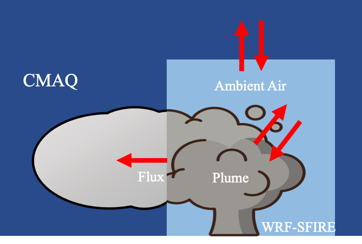
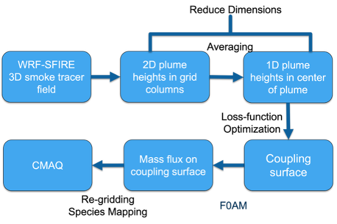
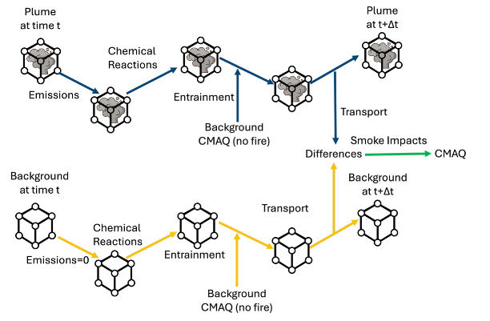

PM2.5 · Spatial comparison07 Apr 2021

The offline coupling algorithm perserves plume dynamics from WRF-SFIRE simulated inert tracers while providing chemistry reactions.


F0AM advances the plume representation through the coupled simulation and provides the evolving information needed within coupling regions.

Compare modeled surface concentrations and smoke-related air quality impacts across coupling methods.